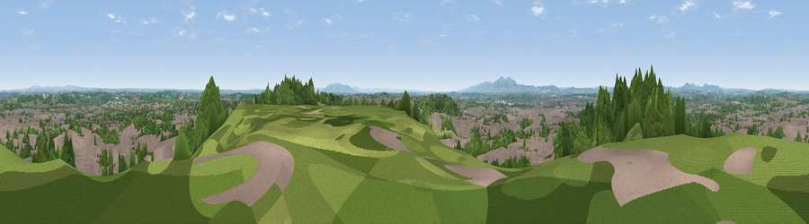

Viewpoint near Worcester
#20050 in England · top 43% of its area beats it · near Worcester · path 218 mWhere it is
The exact computed spot (SO 86875 55875). Click the marker for map links.
Public access: the nearest public right of way is about 218 m away — the final stretch may cross private land. Computed from Natural England's CRoW access layer and OpenStreetMap rights of way — not the legal definitive map. Always verify locally.
The view, rendered

A 360° render of this exact spot computed from the terrain model, tree cover and land cover — summer colours, afternoon light, calibrated against photographs of famous viewpoints. Real trees, hedges and buildings will differ in detail.
The panorama
Grey silhouette: terrain skyline in each direction (720 bearings, Earth curvature and refraction included). Dashed green: skyline with trees (+15 m) and buildings (+8 m) as obstacles. Blue strip: how far the ground is visible on each bearing.
Where the view opens
Wedge length = distance to the farthest visible ground on that bearing (vegetation-aware). Rings at 10, 25 and 50 km.
What fills the view
42% woodland · 41% built-up · 13% grassland · 5% cropland
Angular shares of the visible panorama (visual magnitude), not map area. Landscape diversity 0.50 (0–1 Shannon).
Key numbers
More beautiful places nearby
The staircase of upgrades: each row has a higher view potential than everything closer. Driving times are estimates from straight-line distance, calibrated against real road routing — check an actual route before setting out.
| Place | Direction | Drive | Score |
|---|---|---|---|
| Viewpoint near Worcester | W · 0 km | ~1 min | 54.7 |
| Viewpoint near Tibberton | ESE · 3 km | ~7 min | 58.4 |
| Viewpoint near Littleworth | S · 4 km | ~9 min | 65.8 |
| Viewpoint near Storridge | WSW · 13 km | ~23 min | 70.5 |
| Viewpoint near Martley | WNW · 13 km | ~23 min | 78.1 |
| Viewpoint near West Malvern | SW · 13 km | ~25 min | 81.4 |
| North Hill | SW · 14 km | ~25 min | 86.8 |
| Worcestershire Beacon | SW · 15 km | ~26 min | 87.1 |
52.20095, -2.19346 · source: screening · position refined by local search. Computed location — check access rights before visiting.